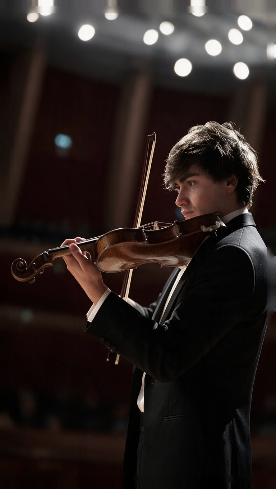

Leonardo Moretti
Primo artista nella storia ad eseguire i concerti di Rachmaninov e Paganini, i due repertori regina del violino. Dalla Scala alla Carnegie Hall di New York.

Dalla Scala ai palchi di stato.
Ex enfant prodige del violino, Leonardo consegue il diploma pre-accademico a 15 anni e si laurea al Conservatorio di Milano. Frequenta poi un Master di due anni con il primo violino del Teatro alla Scala, per poi debuttare come solista al Teatro Donizetti e, nel repertorio di Mendelssohn, in Sala Verdi.
Nel 2019, in occasione del bicentenario dei 24 Capricci di Paganini, si esibisce alla Carnegie Hall di New York. Ha suonato per il Presidente della Repubblica Popolare Cinese Xi Jinping, per il Presidente della Repubblica Italiana e per la First Lady degli Stati Uniti, oltre a collaborare stabilmente con l'Università Cattolica del Sacro Cuore, l'Università Bocconi e la West Texas A&M University come Artist-in-Residence.
Premi, palchi, presidenti.
Oltre 32 concorsi vinti e i palchi più esigenti al mondo, dai teatri di stato alle istituzioni diplomatiche.
“Primo artista nella storia ad eseguire i concerti di Rachmaninov e Paganini, i due repertori regina del violino.” Diapason d'Oro (IT) 2019 — Fellow of the Royal Schools of Music
Premi selezionati
- Concorso "Franz Schubert"1° Premio
- "Marco Dall'Aquila", L'Aquila1° Premio Assoluto
- "Città di Torino" — Premio Rotary Club1° Premio Assoluto
- "Grand Prize Virtuoso" Int'l Competition1st Place
- XVII CIMP Rossini Prize, PesaroVincitore
- Concorso "Claudio Abbado", MilanoPremio Abbado
Si è esibito per
- Xi JinpingPresidente Rep. Popolare Cinese
- Presidente della Repubblica ItalianaConcerto di Natale, Senato
- First Lady degli Stati UnitiMuseo Italoamericano, NYC
- Carnegie HallNew York
- St George's ChurchInternational Händel Festival, Londra
- Auditorium Fondazione CariploMilano
Orchestre e direttori
Collaborazioni regolari con orchestre e maestri di fama internazionale.
Live
Concerti, festival e serate esclusive. Tutte le date aggiornate.